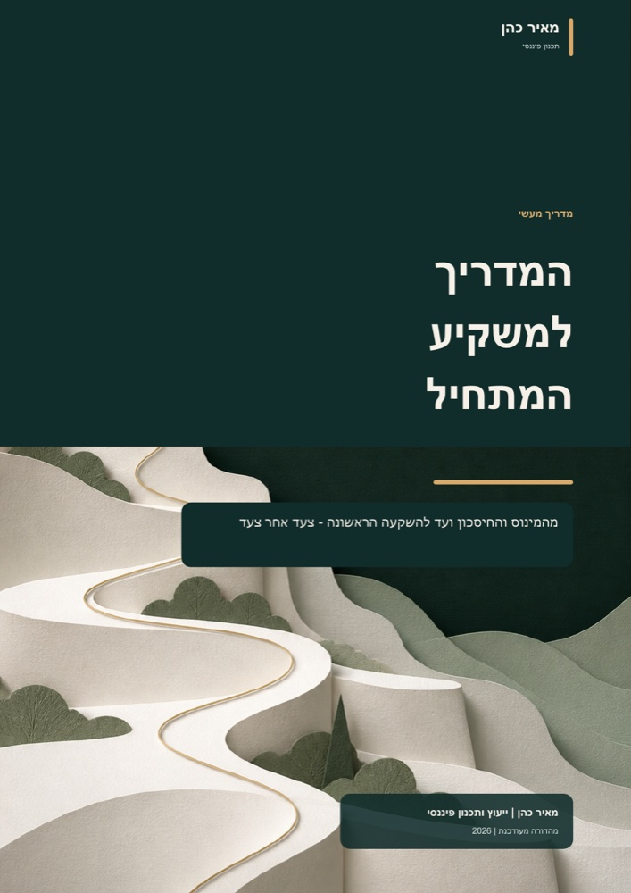

תזרים וחובות 7 דקות קריאה
איך יוצאים מהמינוס בלי לחפש קסמים
ממפים את המצב, עוצרים את ההחמרה ובוחרים סדר לסגירת החובות.
לקריאת המאמר ←ידע וכלים
מאמרים קצרים ומעשיים על התנהלות יומיומית, חיסכון והחלטות השקעה - בלי לדלג על הבסיס.

26 עמודיםעשרה נושאים, מהבסיס ועד לצעד הראשון
מתחילים מכאן
כל מאמר מתמקד בשאלה אחת ומסתיים בצעד שאפשר לעשות כבר השבוע.
תזרים וחובות 7 דקות קריאה
ממפים את המצב, עוצרים את ההחמרה ובוחרים סדר לסגירת החובות.
לקריאת המאמר ←חיסכון ויציבות 6 דקות קריאה
איך בונים רשת ביטחון שמונעת מתקלה אחת להפוך להלוואה יקרה.
לקריאת המאמר ←השקעה ראשונה 8 דקות קריאה
מטרה, טווח זמן, נזילות, סיכון ויכולת להתמיד - לפני שמדברים על מוצר.
לקריאת המאמר ←המדריך המלא
השאירו שם וטלפון. בלחיצה על הכפתור תיפתח בוואטסאפ הודעה מוכנה עם הפרטים. אחזור אליכם ואשלח את המדריך באופן אישי.